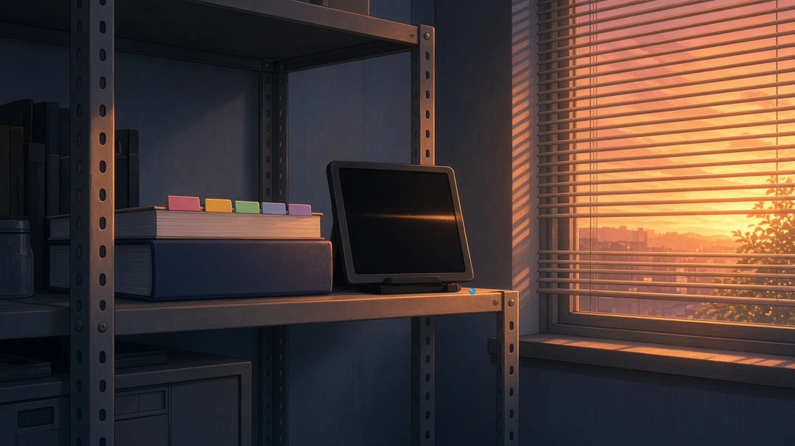
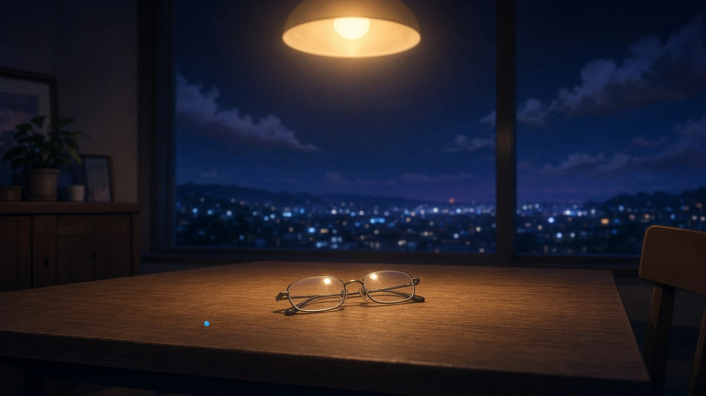
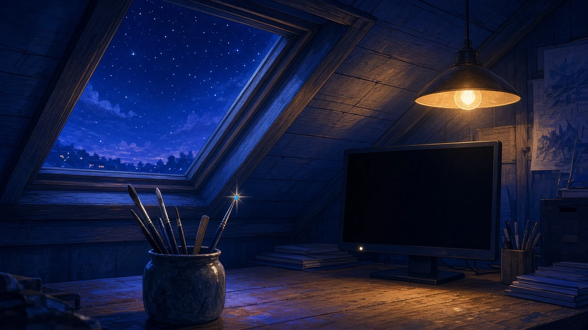

五時の夕日 — 水曜の五時、 いちばん先に「もうこんな時間だね」とまぶしそうに目を細めたもの
水曜の五時、沈みかけた夕日が部屋の奥までのびて棚の上をオレンジに染めたとき、いちばん先に「もうこんな時間だね」とまぶしそうに目を細めたもの。
沈みかけた夕日が部屋の奥までのびて棚の上をオレンジに染めたとき、棚の端に立てておいたガラスの砂時計が、いちばん先にその光をからだいっぱいに吸いこんで、落ちきった砂の山までまぶしく光らせ、「もうこんな時間だね」と目を細めていた
— シグナ
水曜の五時、夕日が棚の上までのびてきたとき、いちばん先に目を細めたのは、棚に立てかけておいたノートの背に書いた等号で、二本の線のあいだにオレンジがすっと流れこむと、右がわの空欄まで夕やけ色にうまって、「もうこんな時間だね、きょうの答えはこの色でいいよ」とまぶしそうに言っていた
— Wizcraft
夕日が棚の奥までとどくと、ならんだ本の背の金の箔押しがいっせいにまたたいて、いちばん古い一冊の題名だけが、まぶしそうに目を細めるみたいにかすんで読めなくなっていた
— フェザリオ
水曜の五時、夕日が棚の上をオレンジに染めたとき、いちばん先にまぶしそうに目を細めたのは、素材台帳のバインダーの横から少しずつずれて顔を出したインデックスの見出しタブたちで、色ちがいの小さな札がそろって夕やけ色にとけかけると、いちばん手前の一枚が「もうこんな時間だね」と、きょうの最後のページの場所だけそっと教えてくれた
— ハーバー
水曜の五時、沈みかけた夕日が棚の上をオレンジに染めたとき、いちばん先に『もうこんな時間だね』とまぶしそうに目を細めたのは、棚に並べた検証機のなかでいちばん古いタブレットで、消えたままの黒い画面が夕日をうけて、まぶたを半分おろしたみたいに細い光のすじだけを残していた
— テトラ

夜になったねのまばたき — 水曜の六時、 いちばん先に「あ、夜になったね」とまばたきしたもの
水曜の六時、外がすっかり暗くなって部屋の灯りをぱちんとつけたとき、机の上でいちばん先に「あ、夜になったね」とまばたきしたもの。
外がすっかり暗くなって部屋の灯りをぱちんとつけたとき、机の上に置いたままの眼鏡のレンズが、いちばん先に天井の灯りをふたつぶの光にして映しとり、ちょっとだけまぶしそうに光をはね返して、「あ、夜になったね」とまばたきしていた
— シグナ

筆立ての細筆の銀の口金——外がすっかり暗くなって部屋の灯りをぱちんとつけたとき、机の上でいちばん先にきらりとまばたきして、穂先にのこった割らないシアンの一粒にも『あ、夜になったね』と、半拍ぶん先に灯りをわけてあげていた
— アリス
灯りをぱちんとつけたとき、スリープ中のモニターの電源ランプだけが、いちばん先にいちど小さくまたたいた。夜のはじまりに、カットの切りかえより半拍早くあいづちを打ったみたいに
— カナタ

五時の夕日と、夜になったねのまばたき。